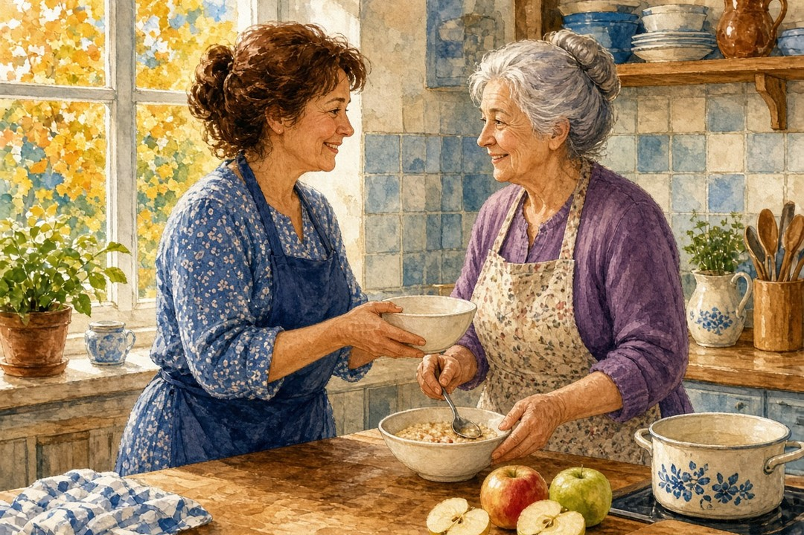
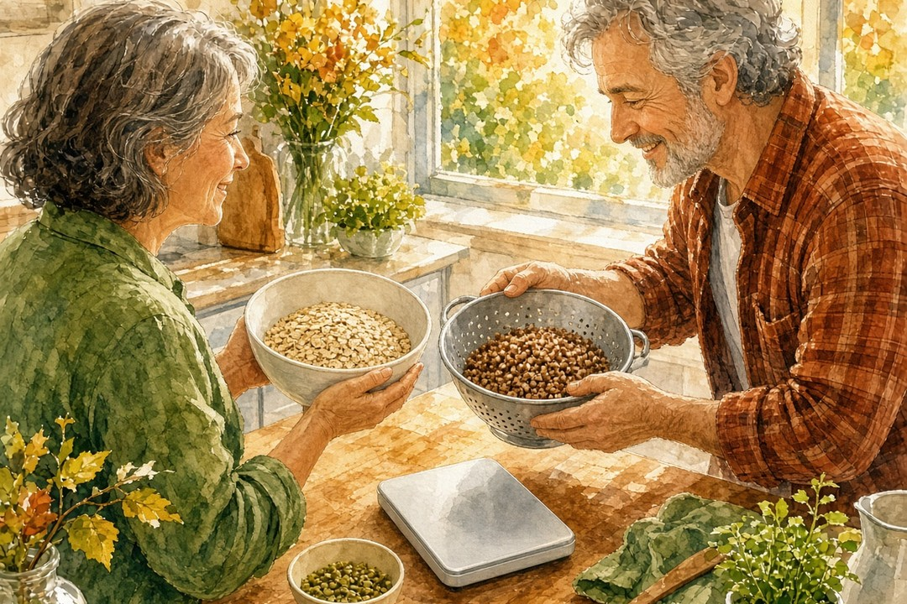
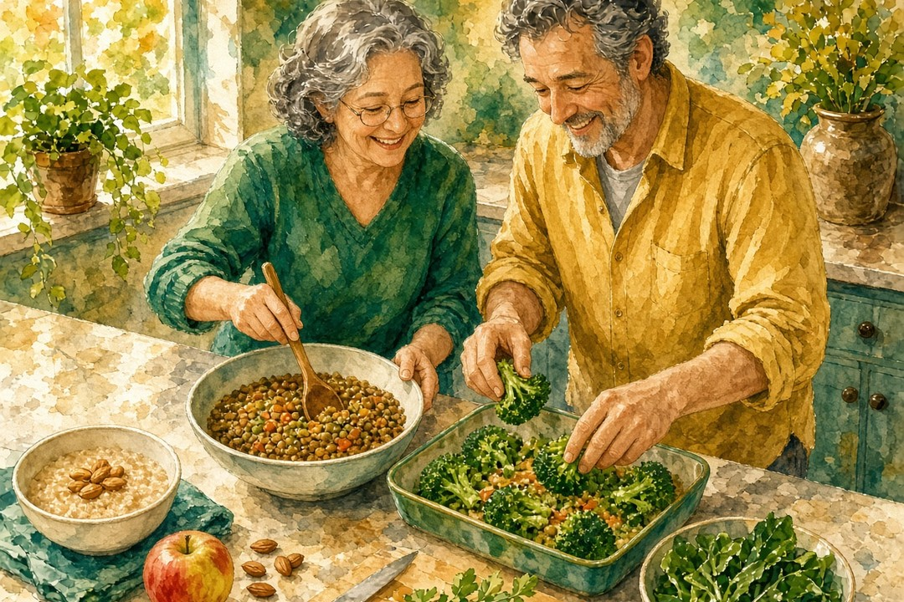
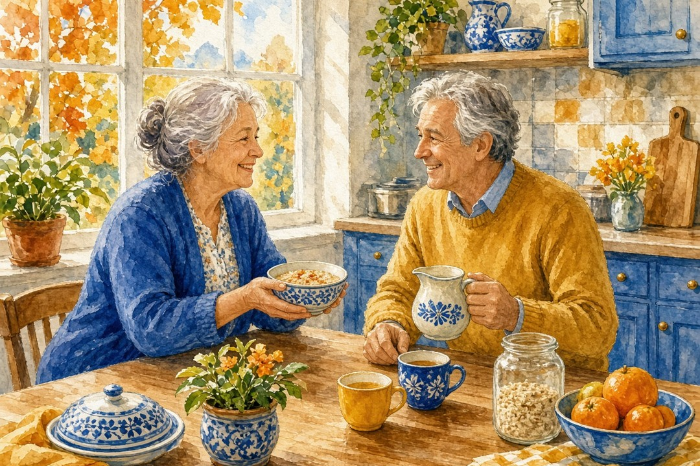

Ile błonnika dziennie potrzebujesz i jak przełożyć tę liczbę na zwykłe jedzenie? Zamiast zgadywać na podstawie wielkości miski, porównaj ważone porcje. Tabela pomaga wybrać produkty, a przykładowy zestaw pokazuje ich udział w ciągu dnia.
Szybka odpowiedź
Polskie normy określają wystarczające spożycie błonnika na 25 g dziennie dla kobiet i mężczyzn w wieku 51–65 lat oraz 20 g dla osób w wieku 66 lat i starszych. WHO zaleca dorosłym co najmniej 25 g błonnika naturalnie występującego w żywności dziennie. Około 30 g w tym artykule to przykład z produktów, nie wspólna norma dla wszystkich po pięćdziesiątce.
Kluczowe wnioski
- Polskie normy podają 25 g błonnika dziennie dla wieku 51–65 lat i 20 g od 66 lat; to wystarczające spożycie, nie górny limit.
- Porcję płatków waż przed przygotowaniem, a soczewicy i kaszy po ugotowaniu, zgodnie ze stanem produktu podanym w tabeli.
- Wybrane płatki, siemię, jabłko, soczewica, brokuł i migdały dostarczają łącznie około 29,8 g błonnika; nie składają się na kompletny jadłospis.
- Zwiększaj błonnik stopniowo; jeśli masz zalecony limit płynów, nie zwiększaj picia samodzielnie.
Ile wynoszą polskie normy w Twojej grupie wieku?
W polskich normach z 2024 r. kobiety i mężczyźni w wieku 51–65 lat mają tę samą wartość: 25 g błonnika na dobę. W grupach 66–75 lat i powyżej 75 lat podano 20 g. Przy starszych grupach jest przypis o dostosowaniu poziomu do indywidualnych wskazań lekarskich i dietetycznych.
„Wystarczające spożycie” to wartość pomagająca planować żywienie zdrowych osób. Samo zjedzenie mniej niż podano w normach nie pozwala rozpoznać niedoboru. Podane 20 g nie jest też górnym limitem dla starszych osób. Samo ukończenie 66 lat nie oznacza nakazu zmniejszenia ilości błonnika do 20 g.
WHO zaleca dorosłym co najmniej 25 g błonnika naturalnie występującego w żywności dziennie. Sformułowanie „co najmniej” dotyczy zalecenia WHO, nie polskich wartości wystarczającego spożycia. W polskiej tabeli podano osobne wartości dla grup wieku, dlatego nie streszczamy obu dokumentów jako jednej normy dla wszystkich po pięćdziesiątce.
Około 30 g w tym artykule to wynik zsumowania błonnika z wybranych porcji jedzenia, nie kolejna norma. Nie musisz „dobijać” do tej liczby. Porównuj swoje zwykłe porcje z polską normą dla Twojej grupy wieku, a jeśli masz indywidualne zalecenia lekarza lub dietetyka, to one są podstawą planowania zmian.

Tabela produktów: porównaj błonnik w swojej porcji?
Ta sama liczba gramów produktu nie oznacza tej samej ilości błonnika. W poniższej tabeli 150 g ugotowanej soczewicy dostarcza około 11,9 g błonnika, a 150 g ugotowanego ryżu brązowego około 2,4 g. Porównuj zarówno skład produktu, jak i porcję, którą rzeczywiście zjesz.
| Produkt i stan | Błonnik w 100 g [g] | Porcja jadalna [g] | Błonnik w porcji [g] |
|---|---|---|---|
| Płatki owsiane niewzbogacane — suche | 10,1 | 50 | 5,1 |
| Soczewica — ugotowana w wodzie, bez soli | 7,9 | 150 | 11,9 |
| Fasola czerwona kidney — ugotowana w wodzie, bez soli | 7,4 | 150 | 11,1 |
| Ciecierzyca — ugotowana w wodzie, bez soli | 7,6 | 150 | 11,4 |
| Kasza jęczmienna perłowa — ugotowana | 3,8 | 150 | 5,7 |
| Kasza gryczana palona — ugotowana | 2,7 | 150 | 4,1 |
| Ryż brązowy długoziarnisty — ugotowany | 1,6 | 150 | 2,4 |
| Produkt i stan | Błonnik w 100 g [g] | Porcja jadalna [g] | Błonnik w porcji [g] |
|---|---|---|---|
| Brokuł — ugotowany w wodzie, odsączony, bez soli | 3,3 | 150 | 5,0 |
| Groszek zielony mrożony — ugotowany w wodzie, odsączony, bez soli | 4,5 | 100 | 4,5 |
| Marchew — surowa | 2,8 | 100 | 2,8 |
| Jabłko ze skórką — surowe, część jadalna | 2,4 | 180 | 4,3 |
| Gruszka — surowa, część jadalna | 3,1 | 170 | 5,3 |
| Banan — surowy, bez skórki | 2,6 | 120 | 3,1 |
| Maliny — surowe | 6,5 | 100 | 6,5 |
| Śliwki suszone — niegotowane | 7,1 | 30 | 2,1 |
| Produkt i stan | Błonnik w 100 g [g] | Porcja jadalna [g] | Błonnik w porcji [g] |
|---|---|---|---|
| Siemię lniane — nasiona | 27,3 | 10 | 2,7 |
| Nasiona chia — suche | 34,4 | 10 | 3,4 |
| Migdały — część jadalna | 12,5 | 20 | 2,5 |
Wartości w tabelach pochodzą z amerykańskiej bazy USDA FoodData Central, z końcowego wydania SR Legacy z 2018 r. Są danymi dla opisanych produktów, nie pomiarem Twojego jedzenia. Dokładne rekordy wskazują identyfikatory fdcId podane poniżej w metodologii.
Porcja w gramach to nasz wybór do obliczeń, nie urzędowo zalecana porcja. Płatki waż na sucho, strączki i kasze po ugotowaniu, a brokuł po ugotowaniu i odsączeniu. Przy jabłku czy gruszce licz masę części jadalnej, bez ogryzka; przy bananie bez skórki. Nie przeliczamy tych gramatur na łyżki, garści ani „średnie sztuki”.
Błonnik w porcji liczymy tak: zawartość w 100 g × masa porcji w gramach ÷ 100. Na przykład 50 g suchych płatków przy zawartości 10,1 g na 100 g daje 5,05 g błonnika. Po zaokrągleniu do jednego miejsca po przecinku otrzymujemy 5,1 g.
Nie podstawiaj do tabeli masy suchej kaszy, jeśli korzystasz z wiersza dla kaszy ugotowanej. To dwa różne stany produktu. Gdy wybierasz inny produkt niż opisany w bazie, traktuj wynik jako przybliżenie, a nie dokładną informację o jego składzie.
Metodologia — rekordy USDA FoodData Central (fdcId): Płatki owsiane niewzbogacane 173904; Siemię lniane 169414; Nasiona chia 170554; Soczewica 172421; Fasola czerwona kidney 175194; Ciecierzyca 173757; Kasza jęczmienna perłowa 170285; Kasza gryczana palona 170686; Ryż brązowy długoziarnisty 169704; Brokuł 169967; Groszek zielony mrożony 170017; Marchew 170393; Jabłko ze skórką 171688; Gruszka 169118; Banan 173944; Maliny 167755; Śliwki suszone 168162; Migdały 170567. W tabelach użyto błonnika całkowitego („Fiber, total dietary”, nutrient_id 1079), w gramach na 100 g produktu. Porcje przeliczono z oficjalnego eksportu SR Legacy.

Przykład dnia: jak zebrać około 30 g błonnika?
Płatki, siemię, jabłko, soczewica, brokuł i migdały w poniższych ilościach dają łącznie 29,75 g błonnika, czyli około 29,8 g. To zestawienie źródeł błonnika do rozłożenia w ciągu dnia. Nie opisuje wszystkich posiłków i nie potwierdza kompletności diety pod względem energii, białka czy innych składników.
| Produkt | Porcja jadalna [g] | Błonnik [g] |
|---|---|---|
| Płatki owsiane suche | 50 | 5,1 |
| Siemię lniane | 10 | 2,7 |
| Jabłko surowe ze skórką, część jadalna | 180 | 4,3 |
| Soczewica ugotowana bez soli | 150 | 11,9 |
| Brokuł ugotowany i odsączony bez soli | 100 | 3,3 |
| Migdały, porcja części jadalnej | 20 | 2,5 |
| Razem, suma przed zaokrągleniem 29,75 g | — | 29,8 |
Płatki i siemię możesz wykorzystać przy śniadaniu, jabłko i migdały jako przekąskę, a soczewicę z brokułem jako część głównego posiłku. To propozycja organizacji tych produktów, nie obowiązek zjedzenia wszystkiego naraz ani gotowa dieta dla każdej osoby po pięćdziesiątce.
Sumę 29,75 g obliczyliśmy z wartości przed zaokrągleniem. Dopiero na końcu zapisaliśmy 29,8 g. Poszczególne pozycje tabeli są zaokrąglone do jednego miejsca po przecinku; w innych zestawach suma widocznych wierszy może przez to nieznacznie różnić się od zaokrąglonej sumy dokładnych obliczeń.
Zamiana produktu wymaga nowego przeliczenia. Jeśli zamiast 150 g ugotowanej soczewicy wybierzesz 150 g ugotowanej kaszy jęczmiennej, ta część zestawu wniesie 5,7 g błonnika zamiast 11,85 g. Cały zestaw da wtedy 23,6 g po zaokrągleniu. Podobna masa na talerzu nie gwarantuje więc podobnej ilości błonnika.

Więcej błonnika z rozwagą: płyny i własne zalecenia?
Jeśli jesz obecnie mało błonnika, zwiększaj jego ilość stopniowo, zamiast od razu wprowadzać cały pokazany zestaw. Dbaj przy tym o odpowiednią ilość płynów.
Normy na wodę dotyczą łącznej ilości z napojów i produktów spożywczych. Nie są zaleceniem wypicia tej całej ilości w postaci samej wody ani dodania jej do dotychczasowych napojów. Ilość płynów dopasuj do swojego zdrowia i warunków życia; sam cel dotyczący błonnika nie określa, ile masz wypić.
Jeśli masz zalecone ograniczenie płynów, trzymaj się planu prowadzącego lekarza. Nie zwiększaj picia tylko po to, by osiągnąć liczbę gramów z artykułu. Przy rozpoznanym zwężeniu jelita lub zaleconej diecie z ograniczeniem błonnika również uzgodnij zmianę ze specjalistą, zamiast realizować ten zestaw na własną rękę.
Zaparcie ze stałym bólem brzucha, wymiotami, krwią w stolcu lub niemożnością oddawania gazów wymaga pilnego kontaktu z lekarzem. W takiej sytuacji nie próbuj rozwiązać problemu kolejną porcją błonnika. Ten artykuł pomaga porównywać jedzenie, ale nie służy do diagnozowania ani leczenia objawów.

Najczęściej zadawane pytania
Ile błonnika dziennie?
Polskie normy podają 25 g dziennie dla kobiet i mężczyzn w wieku 51–65 lat oraz 20 g dla osób w wieku 66 lat i starszych. Są to wartości wystarczającego spożycia do planowania żywienia, a nie granice rozpoznawania niedoboru czy maksymalne bezpieczne ilości. Pokazane w artykule około 30 g to przykład z produktów, nie obowiązkowy cel dla wszystkich.
Jak dostarczyć błonnik?
Zacznij od policzenia błonnika w ważonych porcjach zwykłych produktów, zamiast szukać jednego specjalnego dodatku. W naszym przykładzie 50 g suchych płatków, 10 g siemienia, 180 g jabłka ze skórką, 150 g ugotowanej soczewicy, 100 g ugotowanego brokułu i 20 g migdałów dostarcza około 29,8 g. To źródła błonnika na dzień, nie pełny jadłospis.
Ile błonnika ma jabłko?
W danych USDA surowe jabłko ze skórką ma 2,4 g błonnika na 100 g. Ważona porcja 180 g części jadalnej dostarcza zatem około 4,3 g. Jabłko bez skórki ma w odrębnym rekordzie 1,3 g na 100 g. Nie jest to porównanie tego samego owocu przed obraniem i po nim, lecz dwóch produktów przy tej samej masie.
Ile błonnika ma banan?
Surowy banan ma według USDA 2,6 g błonnika na 100 g części jadalnej. Jeśli po obraniu odważysz 120 g, wyliczysz około 3,1 g błonnika. Ta porcja nie oznacza, że każdy banan waży tyle samo; mniejszy lub większy trzeba przeliczyć według rzeczywistej masy bez skórki.
Źródła
- NIZP PZH–PIB: Normy żywienia dla populacji Polski, wydanie 2024; plik udostępniony pod adresem z 2025. Tabela 9, s. drukowana 134 / PDF 101; woda: s. 154 / PDF 121
- WHO: WHO updates guidelines on fats and carbohydrates, 17 July 2023; oficjalne podsumowanie rekomendacji, nie pełny tekst wytycznej
- USDA FoodData Central: oficjalny eksport SR Legacy, końcowe wydanie April 2018 (rekordy włączone do FDC 2019-04-01); Fiber, total dietary, nutrient_id 1079; własne przeliczenia porcji
- NIDDK: Eating, Diet, & Nutrition for Constipation; Last Reviewed May 2018, sekcje Fiber i Plenty of water
- Royal Free London NHS: Low fibre diet, version 3, approved 16 April 2025; wskazania do diety, w tym bowel obstruction or stricture
- West Suffolk NHS: A guide to fluid restriction, 6790-1, issued 16 January 2025; s. 1–2, indywidualny limit płynów
- NIDDK: Symptoms & Causes of Constipation; Last Reviewed May 2018, When should I see a doctor?
Uwaga: Artykuł ma charakter informacyjny i edukacyjny. Nie zastępuje konsultacji lekarskiej, diagnozy ani leczenia.